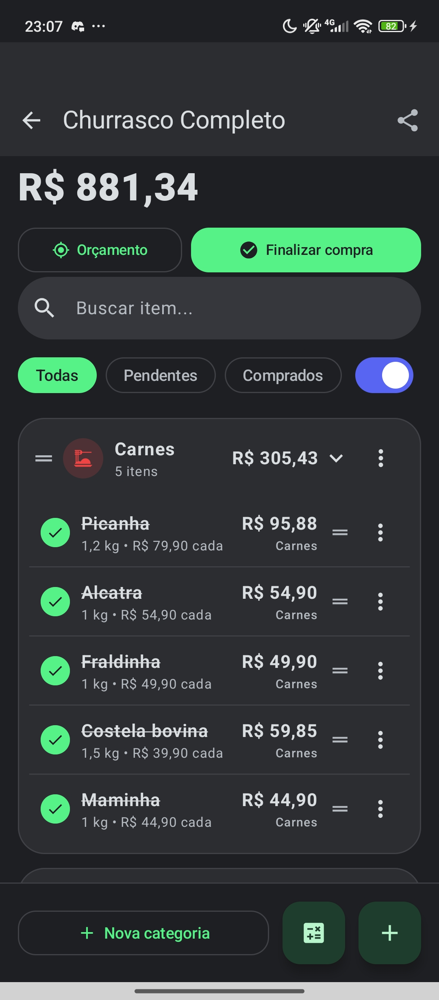

Listão
ListãoComo compartilhar uma lista de compras no WhatsApp
Quem mora junto sabe: a briga do mercado quase sempre começa numa lista que não chegou. Compartilhar a lista pelo WhatsApp resolve — e com o Listão, quem recebe toca no link e a lista abre direto no app, já pronta pra usar. Sem imprimir, sem copiar item por item, sem cadastro.
Baixe o Listão no seu celular
É grátis, offline e não pede cadastro — nem telefone, nem e-mail. Instale o APK tocando no botão de download e confirmando a instalação (o Android mostra um aviso padrão para apps fora da loja).
Monte sua lista
Crie uma lista nova, adicione os itens com preço e quantidade, e organize por categorias se quiser (arrastando os itens entre elas). O app calcula o total na hora e avisa se você passa do orçamento.

Toque no menu ⋮ da lista e escolha "Compartilhar"
No card da lista (ou dentro dela), abra o menu de três pontinhos e toque em Compartilhar. O Listão gera um link com a lista inteira dentro dele — nada fica salvo em servidor algum.
Escolha o WhatsApp e a conversa
Escolha Enviar no WhatsApp (link) e mande pra quem for comprar com você: marido, esposa, mãe, vizinho. A mensagem aparece com título bonito e a prévia da lista.
Quem recebe, toca — e a lista abre sozinha
Se a pessoa tem o Listão instalado, a lista abre direto no app, já editável. Se não tem, abre uma página mostrando a lista com o botão de baixar o app. Funciona igual com quem tem iPhone: a pessoa vê a lista na página, só não edita no app.
Pra que compartilhar a lista de compras?
Lista compartilhada acaba com três problemas clássicos: o "comprei errado" (a lista era outra), o "faltou isso" (quem sabia não avisou) e a duplicada (cada um comprou um arroz). Com o link no grupo da família, todos compram olhando a mesma lista — e quem termina primeiro já vai marcando o que caiu no carrinho.
E como o Listão é offline, compartilhar funciona até com internet ruim no mercado: a lista viaja no link, o resto mora no aparelho de cada um.